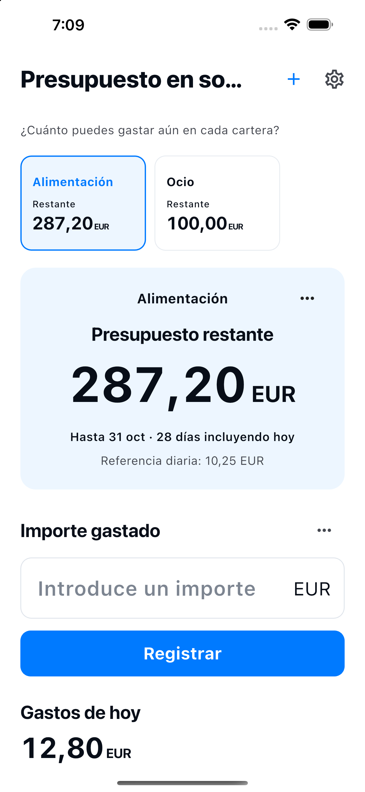

Crea una cartera con el nombre y presupuesto que elijas.
¿Cuánto puedes gastar aún en cada cartera?
Comida. Ocio.
Presupuestos separados y claros.
Reparte tu presupuesto entre comida, ocio y gastos diarios. Crea tus propias carteras y comprueba cuánto puedes gastar en cada una.
Ver cómo funcionaDisponible para iPhone y Android

Cómo funciona
Separa. Registra. Mira lo que queda.
Elige una cartera y registra lo que has gastado.
Corrige registros o añade reembolsos en el historial.
Inicia el siguiente presupuesto. Los registros anteriores se conservan.
Lo esencial
Tus propias carteras.
Un control sencillo.
- Nombre de la cartera
- Elige el nombre y el presupuesto que quieras, como Alimentación, Ocio u Hogar. El periodo inicial es este mes.
- Presupuesto restante
- Presupuesto restante = presupuesto − gastos registrados + reembolsos. Es una referencia basada en tus entradas, no el saldo de tu banco o dinero en efectivo. El exceso de una cartera no se cubre con el saldo de otra.
- 10 idiomas · 10 monedas
- 日本語 / English / 한국어 / 简体中文 / 繁體中文 / Español / Français / Deutsch / Italiano / Português (Brasil)
JPY / USD / EUR / KRW / CNY / TWD / BRL / GBP / CAD / AUD
Registros en tu dispositivo
Sin necesidad de cuenta.
Los nombres, presupuestos, monedas y periodos de las carteras, así como los importes, fechas y notas de gastos y reembolsos, se guardan en la base de datos de esta aplicación en tu dispositivo. Se utilizan para mostrar el presupuesto y el historial de cada cartera.
No necesitas una cuenta. La aplicación no envía tus registros a servidores del desarrollador y no incluye publicidad, análisis de uso ni seguimiento. El sistema operativo puede incluir datos en copias de seguridad o transferencias de dispositivo; no se garantiza su recuperación. Puedes borrar gastos y reembolsos del historial. Archivar una cartera conserva sus registros. Desinstalar la aplicación puede eliminar los registros locales. Gestiona las copias de seguridad del sistema desde los ajustes del dispositivo o de tu cuenta.
Política de privacidad →